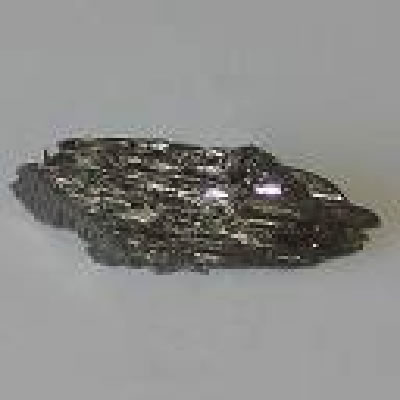
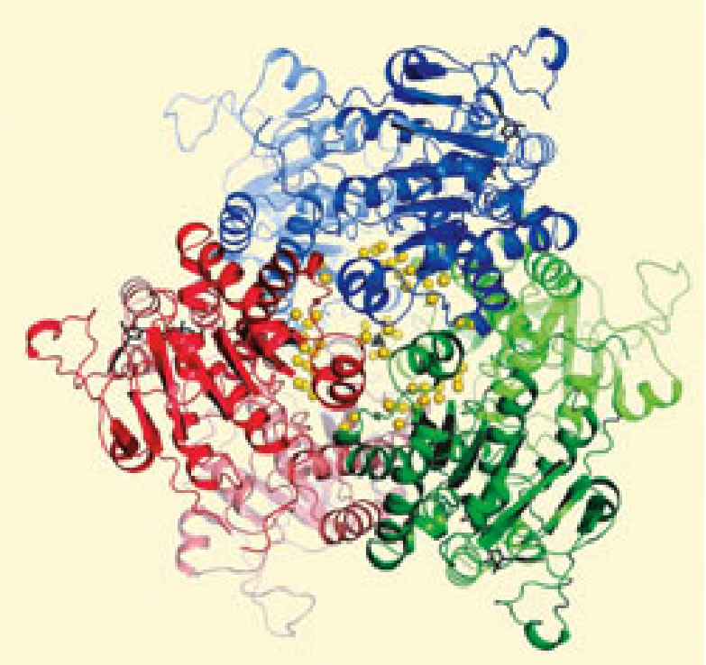
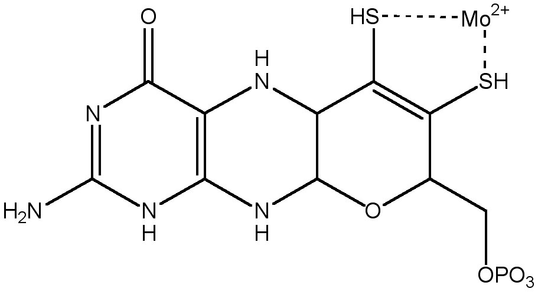
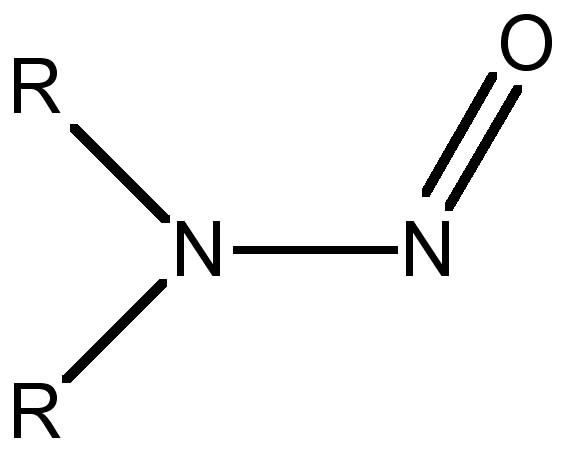
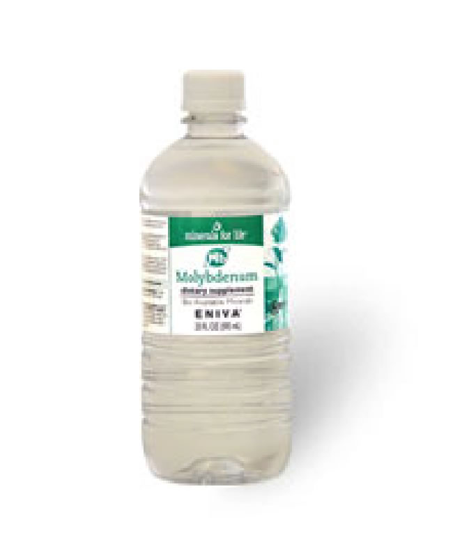

| METALS IN MEDICINE AND THE ENVIRONMENT | |||
| Metals | Problems with Molybdenum Deficiencies | ||
|
Overview Molybdenum, like many other micronutrients, comprises very little the dry weight of plants and animals (Figure 1). However, if it is not found in the correct amount in the diet it can have devastating consequences. Linxian is a region in the Henan province in China that has seen staggering rates of gastroesophageal cancer in recents years. The high rate is believed to be due to a lack of a number of micronutrients in the soil of that region, most notably molybdenum, which forces plants to produce cancer causing agents called nitrosamines. This nitrosamine production may lead to the oxidative damage of cells during the ingestion of plant materials, which is always a risk factor for future carcinoma. When antioxidants are administered in high doses the occurance of cancer decreased noticeably. This experimental evidence supports the oxidative damage hypothesis.  Figure 1 Molybdenum Metal Molybdenum Uptake It has been shown that the only way for plants to take up molybdenum is in its anionic form.(1) Molybdenum is found in nature in three major forms. The most prevalent form is found as MoS2 in Molybdenite, followed by Fe[Mo(O)4] (Wulfenite) and Ca[Mo(O)4] (Powellite). It is hypothesized that these oxy anions are the anionic species of molybdenum take up in plants. Although eukaryotic uptake mechanisms are very poorly understood there are molybdenum transportors found as sulfur/molybdenum cotransportors(2) and phosphate/molybdenum cotransportors in tomato plants(3) and also as distinct molybdenum transportors found in the green algae Chlamydomonas reinhardtii.(4) The structure of a bacterial molybdenum storage protein that can hold ~100 Mo atoms is shown below in Figure 2.(5)  Figure 2 Bacterial Molybdenum/Tungsten Storage Protein (5) Plants have two ways of converting nitrogen into the biologically useful ammonia. The first is the fixation and conversion of elemental Nitrogen, N2. The second is converting nitrate into ammonia.(6) This ammonia is eventually carried on to more useful metabolites, including amino acids. In most plants the nitrate reductase electron flow is passed through Nicatinamide Dinucleotide Phophate in its reduced form (NADPH + H+). From there the electrons are passed to Flavin Adenine Dinucleotide (FAD) to cytochrome 557 to a molybdenum complex (6,7). This bidentate diothiol metal-ligand molybdenum complex is called molybdopterin (Figure 3). After nitrite is produced as the product, it moves on to other nitrite reductase enzymes in the plant to finally form ammonia.  Figure 3 Molybdopterin Gastroesophageal Cancer in Linxian Region Linxian is a region in northern China that has seen esophageal and stomach cancer rates that are 10 times higher than the Chinese average and over 100 times higher than the average in the US. (8) It has been hypothesized that the cause of these cancers are due to the high levels of nitrosoamines (Figure 4) found in the systems and diets of the population in Linxian.(9) The sources of these nitrosamines are from plants with a number of vitamin and micronutrient deficiencies, most notably molybdenum deficiencies.(8) It is thought that when there is deficiency of molybdenum in plants, nitrosamines are produced due to the fact that nitrate reductase is not able to perform properly without its molybdenum cofactor. When this happens the plant uses other mechanisms to catabolize nitrate. These compensatory mechanisms produce the cancer-causing nitrosamines.(8) The mechanism of cargenogenesis is still poorly understood but it is hypothesized that it operates by some form of oxidative damage. This theory is supported by the fact that when the diets of the population in Linxian was supplemented with antioxidants Vitamin A and Vitamin E the incidence of cancer over a five year period went down.(9)  Figure 4 Nitrosamine
Molybdenum Mineral Water Molybdenum even appears as a supplement in mineral water and can be purchased from Eniva Corporation (Figure 5).  Figure 5 Eniva Molybdenum Mineral Water Conclusion Although the molar quantity of molybdenum is minute in most living systems, as it is for most other inorganic micronutrients, it has been shown to still be a vital component to the balance of an ecosystem. These types of studies show that in order to diagnose and treat human disease we need a healthy understanding of many different scientific disciplines. Resources Copper Antagonism of Molybdenum uptake Recommended Daily Values for Molybdenum References (1) Mendel, R. “Biology of the Molybdenum Cofactor”, J. of Exp. Bot., 9, 2007; 2289-2296.(2) Alhendawi RA, Kirkby EA, Pilbeam DJ. Evidence that sulfur deficiency enhances molybdenum transport in xylem sap of tomato plants. J. Plant Nut., 28, 1347–1353 (2005). (3) Heuwinkel H, Kirkby EA, Le Bot J, Marschner H., Phosphorus deficiency enhances molybdenum uptake by tomato plants. J. Plant Nut, 15 , 549–568 (1992). (4) Llamas A, Kalakoutskii KL, Fernandez E., Molybdenum cofactor amounts in Chlamydomonas reinhardtii depend on the Nit5 gene function related to molybdate transport. Plant, Cell Envron., 23, 1247–1255 (2000). (5) From: Schemberg, J. et al, Angew. Chem. Int. Ed., 2007, DOI: 10.1002/ange.200604858. (6) Cowan, J.A., Inorganic Biochemistry : An Introduction, (Canada, Wiley-VCH, 1997). (7) Kleinhofs A, Warner RL, Melzer JM, Plant Nitrogen Metabolism , Recent Advances in Phytochemistry, Vol 23, Plenum Press, New York, pp. 117-155, (1989). (8) Higdon, J., An Evidence Based Approach to Vitamins and Minerals (New York, Thieme, 2003). (9) Chung, Y., Vitamin Nutrion and Gastroesophageal Cancer, J. Nutr., 338S-339S (2000). Author: James East |
|||
| Topics | |||
|
|||